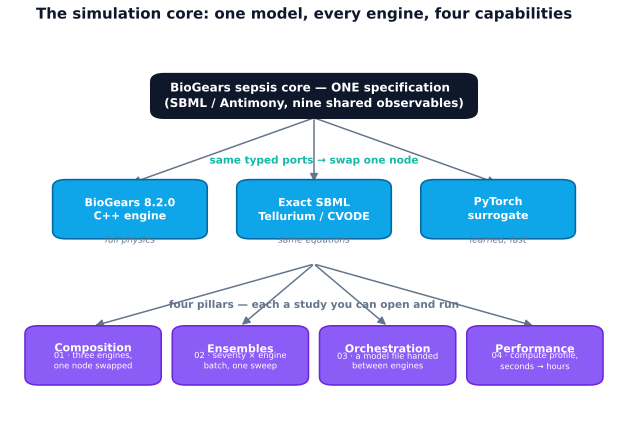
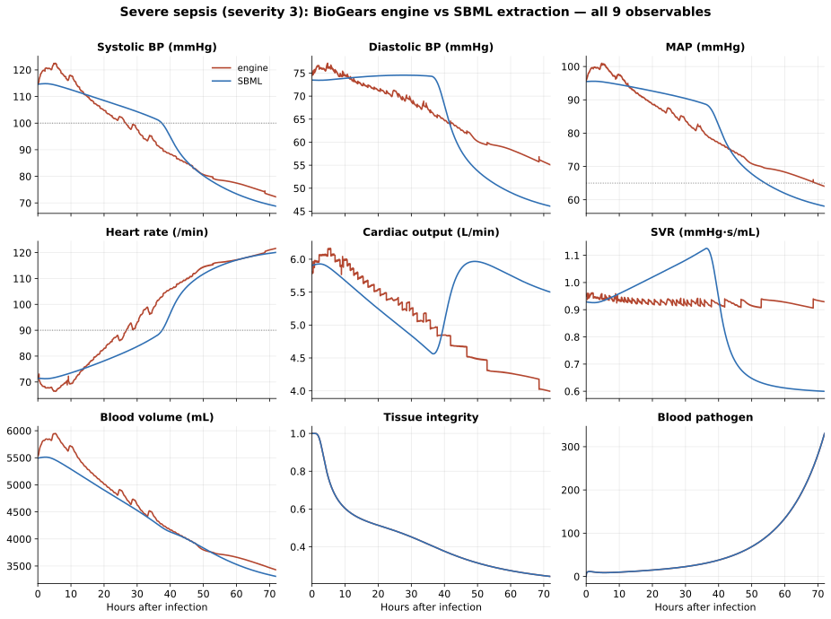
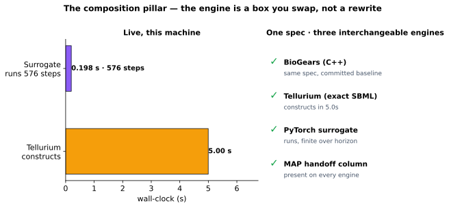
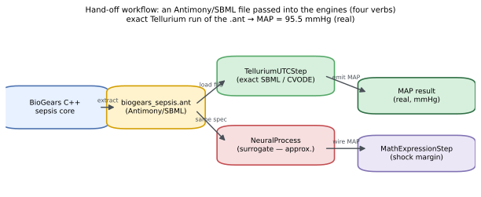
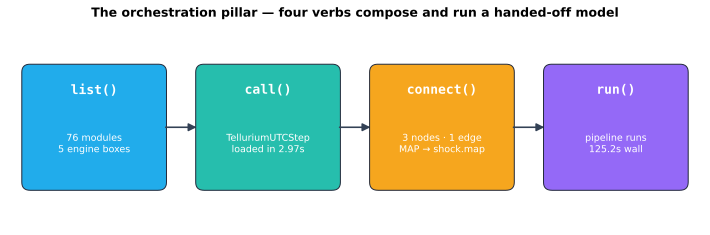
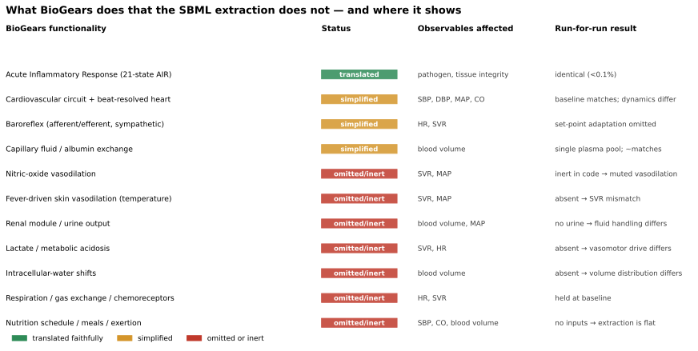

biogears-sbml-sepsis — figure gallery
18 figures across 6 studies. Use the list on the left to jump to any study; each figure has its own ↓ download.
The simulation core — one sepsis model, every engine
00-simulation-core


Composition — one sepsis spec, interchangeable engines
01-composition




Ensembles — a severity × engine batch in one sweep
02-ensembles


Orchestration & workflows — compose modules, hand off an SBML file
03-workflows




Performance — where the compute goes, and the surrogate speedup
04-performance


Fidelity — do the engines agree, and where not
05-fidelity


